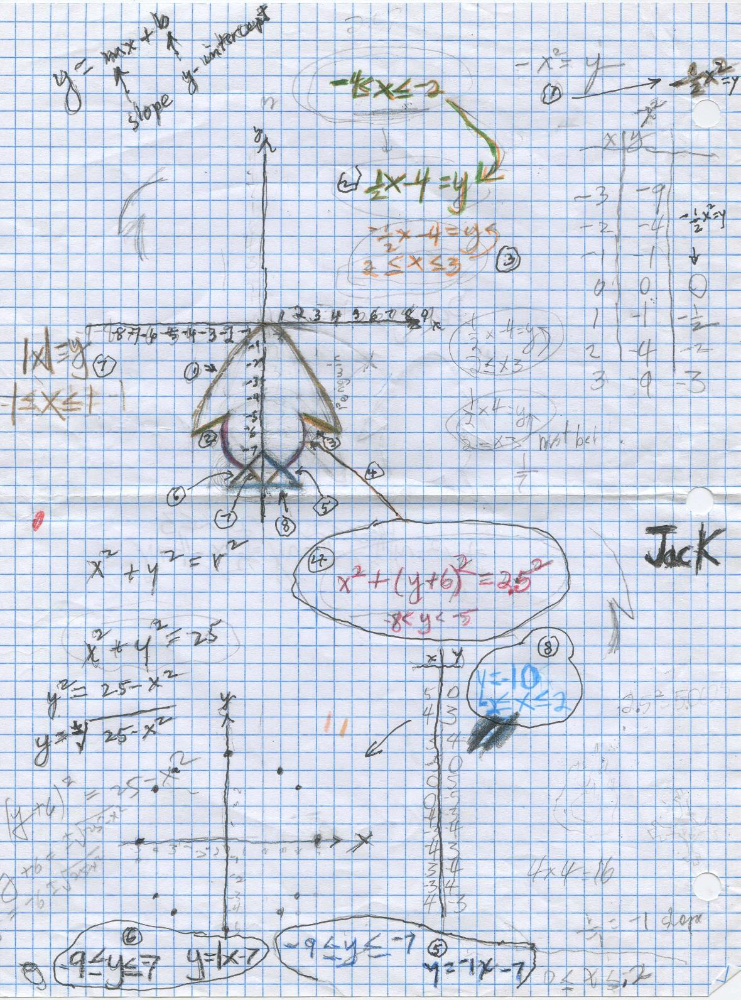

Jack draws a Penguin & asks Don to help him describe it using the graphs of equations!
It took us about 4 months to finish, but we did it. The # of the equation is circled.
Each equation led to a lot of discussion- multiplying signed numbers in 1), the equation of a circle in 4), slope and intercept for the lines 2), 3), 5), and 6),... and what the limits of the x and y values needed to be in all of them.
For the top part we tried the parabola x2 = y, then -x2=y to open downward, but that was too thin. We ended with a wider parabola -(1/2)*x2 =y (circled 1) with -4<=x<=4 to approximate Jack's picture. Note -8<=y reads y is greater than or equal to -8.

The under-flap equations 2) and 3) are both linear with opposite slopes: 2). is (1/2)*x-4=y with x-limits -4<=x<=-2 and 3). -(1/2)*x-4=y with x-limits 2<=x<=4, this 4 corrects the 3 on the graph.
For the body we decided on parts of a circle. and discussed the equation of a circle (left, near the bottom). We came up with equation 4). x2 + (y+6)2 = 2.52 a circle with radius 2.5, and the center at (0,-6) and -8<=y<=-5.
For the outside of the legs we used linear graphs with opposite slopes: 5). y=-1x-7 and 6). y=1x-7, both with the y-limits are the same: -9<= y <=-7 and -9<= y <=-7. For the inside of the legs 7).we used the absolute value function |x| = y with the x-limits -1<=x<=1. N.B. |3|=3 and |-3|=3.
The bottom of the feet we came up with 8). as y= -10 with the x-limits -2<=x<=2.
Great job, Jack!!!